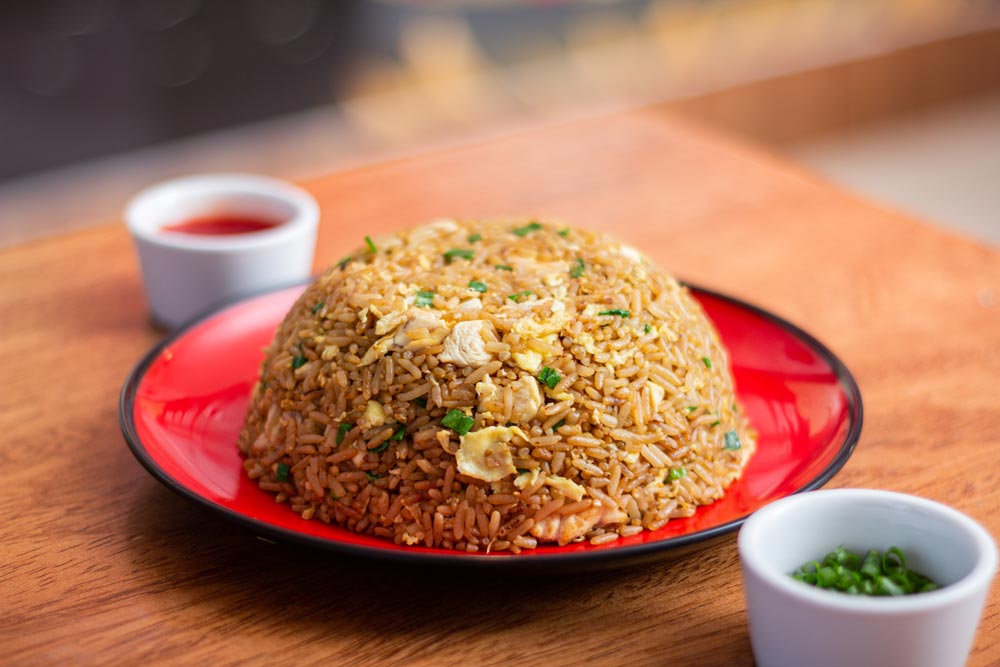

¿Cómo hacer el arroz chaufa?
Ingredientes:
- 6 cucharadas de aceite vegetal
- 2 huevos, levemente batidos
- ½ cucharadita de sal de mar
- ¼ cucharadita de pimienta blanca
- 2 pechugas de pollo deshuesadas, picadas en tiras
- Kion Molido
- ½ taza de pimentón rojo, picados en cuadraditos pequeños
- 4 taza de arroz cocido (basmati o pre graneado)
- 3 cucharadas de salsa de soya
Instrucciones:
Pasos:
- Calentar 2 cucharadas de aceite en una sartén mediana. Aliñar los huevos batidos con la sal de mar y la pimienta blanca.
- Vaciar los huevos en la sartén y cocinar como si fuera un panqueque delgado. Dar vuelta y cocinar por el otro lado. Cortar en tiras. Reservar
- En un wok o sartén profunda, calentar dos cucharadas de aceite. Sazonar el pollo y luego agregar a la sartén. Cocinar hasta que el pollo esté cocido.
- Sacar de la sartén y reservar. En el mismo wok, agregar las dos cucharadas de aceite restante, añadir el cebollín (parte blanca), kion molido y pimentón rojo.
- Cocinar hasta que las verduras estén blandas; 2 a 3 minutos. Incorporar el arroz, pollo y calentar.
- Añadir la salsa de soya Gourmet y la mitad de la parte verde de cebollín, cocinar hasta que esté todo bien integrado y el arroz caliente.
- Agregar el huevo picado y servir inmediatamente, espolvorear con el resto del cebollín.